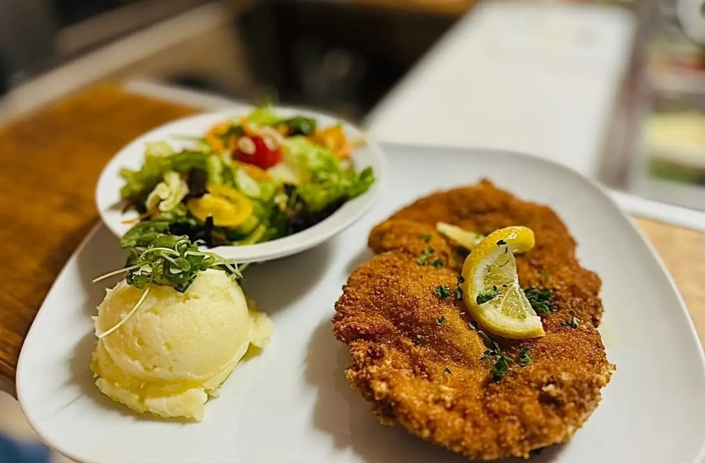
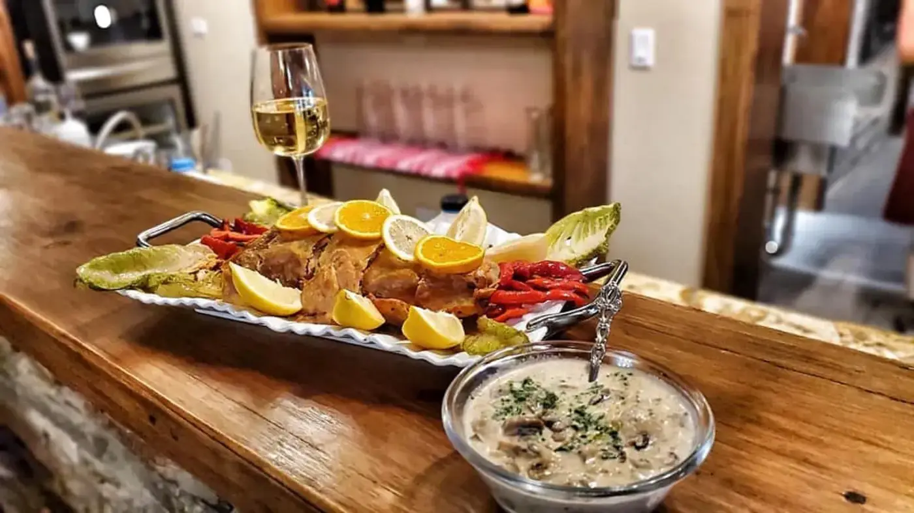
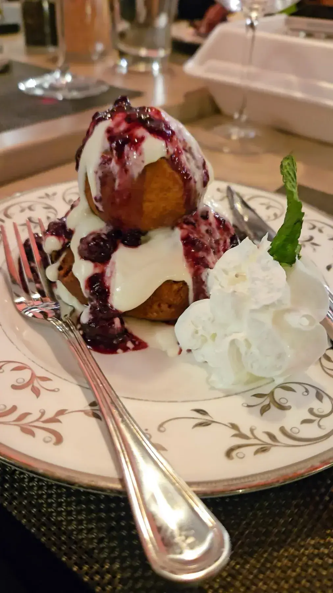

Dinner from the grandma's kitchen
A plated main with mashed potatoes and a fresh side salad. Generous portions, bold flavors.
Chanta · Temple Terrace
Chanta serves Temple Terrace from Tampa.
Coming from Temple Terrace? Chanta is a family-owned Romanian restaurant in Tampa, on South Hyde Park Avenue, with freshly baked bread and dinner from Tuesday to Sunday.
What to order
Food freshly prepared every day, plated the way the family likes it.

A plated main with mashed potatoes and a fresh side salad. Generous portions, bold flavors.

Shared plates come out on a wooden bar with lemon and roasted peppers, a cream sauce with mushrooms alongside.

Plated desserts with berries, cream and mint, served on china with silver cutlery.
4.7 ★ · 963 Google reviews
Had the loveliest birthday dinner at Chanta last night. I ordered the Lamb Special and it was incredible. The lamb had deep/rich flavour; Perfectly cooked vegetables; The horseradish sauce was the perfect accompaniment; And the mashed potatoes with caramelized onions folded into them was phenomenal. The portion sizes were quite generous (will be eating my leftovers soon).
Unique menu and decor, perfect for my wife's birthday dinner! We got the Lamb Special and Ravioli Aragosta (lobster). Both were spectacular with great portions and bold flavors. Perfectly grilled lamb and veggies. Loved the tangy-oniony cream sauce with the with the ravioli. The mashed potatoes with caramelized onions were life-changing, so good. Absolutely will be back to try more of the menu options!
Please let the. Master chef know that not only is she making deliciousness but she’s also making dreams come true. We were so happy to share the experience with friends and this place made for the perfect backdrop to a long awaited reunion over great food. Also while dining we chatted up a table next to us that soon joined our group and we just added a table and had a blast all together.
The food here was exceptional, this marked only my second visit, yet it reaffirmed why I returned. Each dish was thoughtfully prepared, rich in flavor, and beautifully executed. My waiter was attentive without being intrusive, checking in every 15 to 25 minutes to ensure everything was impeccable.
Book on OpenTable, then come hungry. Closed Mondays.